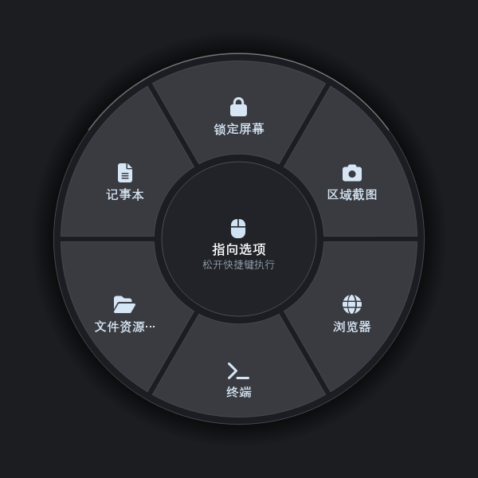
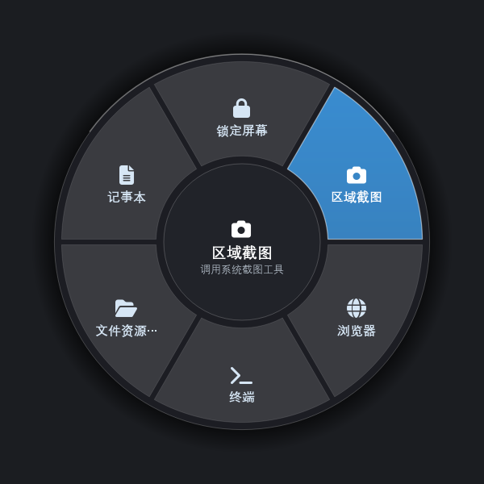
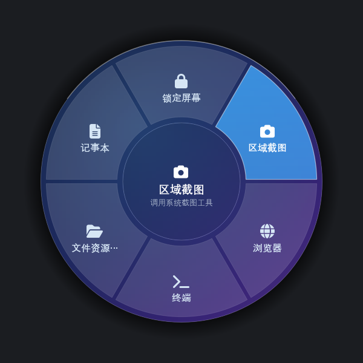

长按唤出，不误触
默认长按 Tab 约 0.2 秒呼出。短按仍会补发一次原生 Tab， 表单跳格、IDE 缩进全都不受影响 —— 这是它敢占用 Tab 键的前提。
按住 → 移动鼠标 → 松开，三步完成一次启动。 把最常用的动作放在指尖，不用再翻开始菜单、不用记快捷键。
每一个细节都在减少一次犹豫：不抢焦点、不打断你手头的事，动作在松开鼠标的瞬间完成。
默认长按 Tab 约 0.2 秒呼出。短按仍会补发一次原生 Tab， 表单跳格、IDE 缩进全都不受影响 —— 这是它敢占用 Tab 键的前提。
鼠标移到哪，哪个扇区就高亮，松手立刻执行。停在盘面正中或按 Esc 可以取消，不会误触发。
呼出时抓取屏幕并做降采样模糊，让轮盘像浮在桌面之上。 对性能敏感的机器可一键降为纯色。
拖拽调整顺序，或者直接从资源管理器把 .exe / .lnk
拖进列表就能加一项。名字、副标题、图标都能改。
不请求网络、不上传任何数据。设置存在
%APPDATA%\MiaoQiWheel\，采用原子写入，崩溃也不会损坏配置。
触发方式可换成双击或组合键，长按阈值 150~400 ms 可调， 轮盘大小 82%~120%，还能关掉动画、开机自启。
从锁屏、截图到音量、深色模式，常用操作都已经配好。也可以填入任意命令行，接上你自己的脚本。
图标来自 FontAwesome 6，与软件内显示一致。以上为内置预设，实际可自由增删改。
轮盘本体、扇区高亮与毛玻璃效果，均为程序实际渲染输出。



一个键按住不放会经历「按下」和「松开」两个时刻，中间这段时间正好用来选。
按住主键超过阈值（默认 200 ms），轮盘在鼠标位置浮现。
鼠标划向哪个扇区，哪个就亮起来，中央实时显示名称与说明。
松手的那一刻执行动作。停在正中或按 Esc，则视为取消。
单独 Tab 如果做成点按即呼出，Tab 就无法再用于表单跳格和 IDE 缩进。 所以这里用「长按」区分意图：短按照常生效，长按才唤出轮盘。 阈值可在设置里调到 150 ms，几乎无感。也支持双击与组合键触发。
下载安装包后双击运行，一路下一步即可。装完会自动启动，托盘出现图标就成功了。
在任意界面按住 Tab 约 0.2 秒，轮盘会在鼠标位置浮现。
托盘图标右键 →「打开设置」，把自己常用的软件拖进列表，换成顺手的样子。
小技巧：不需要的功能可以关掉。在「通用」里能把触发方式改成双击或组合键， 也可以调整轮盘大小；对性能敏感就把毛玻璃关掉，换成纯色更轻快。
最常见的原因是当前有以管理员权限运行的程序在前台。 Windows 的用户界面特权隔离（UIPI）会让这类程序截获键盘钩子， 导致轮盘收不到信号。解决办法是用普通权限重启相关程序， 或者在设置里换一个主键（Caps Lock 之类的左手单键更好按）。
通常是便携版没有完整解压 —— 图标字体是随包分发的，
必须解压整个目录。单独把 MiaoQiWheel.exe
拷出来是跑不起来的，重新完整解压一次即可。
不会。程序不发起任何网络请求，所有配置都保存在本机
%APPDATA%\MiaoQiWheel\settings.json。
即便断电或崩溃，配置也是原子写入的，不会写坏。
可以。直接把 .exe 或 .lnk 从资源管理器
拖进设置里的列表就行。也可以选择「命令」类型，填入任意命令行，
接自己的脚本。轮盘支持 2 到 12 个选项。
请先确认用的是最新版本。如果仍然异常，可以在设置里关闭毛玻璃背景试试
—— 该效果依赖屏幕内容抓取，在部分缩放组合下需要单独适配。
问题依旧的话，把 %APPDATA%\MiaoQiWheel\crash.log 反馈给我们。
去设置里把「开机时自动启动」关掉再打开一次。 然后可以在「任务管理器 → 启动」里看到「MiaoQiWheel」这一项， 确认它处于启用状态。